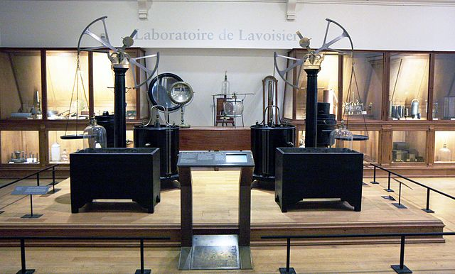

“....nada más grande y ni más sublime ha salido de las manos del hombre que el sistema métrico decimal”
Esta frase fue pronunciado por Antoine de Lavoisier (1743-1794) que fue un químico, biólogo y economista francés, considerado el creador de la química moderna, junto a su esposa, la científica Marie-Anne Pierrette Paulze, por sus estudios sobre la oxidación de los cuerpos, el fenómeno de la respiración animal, el análisis del aire, la ley de conservación de la masa o ley Lomonósov-Lavoisier, la teoría calórica y la combustión, y sus estudios sobre la fotosíntesis.
Es curioso que una persona que ha hecho tantos avances en la ciencia, asegure que el mayor de todos sea el sistema métrico decimal. Por este y otros motivos dedicamos este tema en este ámbito a la medida de magnitudes y al actual Sistema Internacional de Unidades (antiguo sistema métrico decimal).
 |